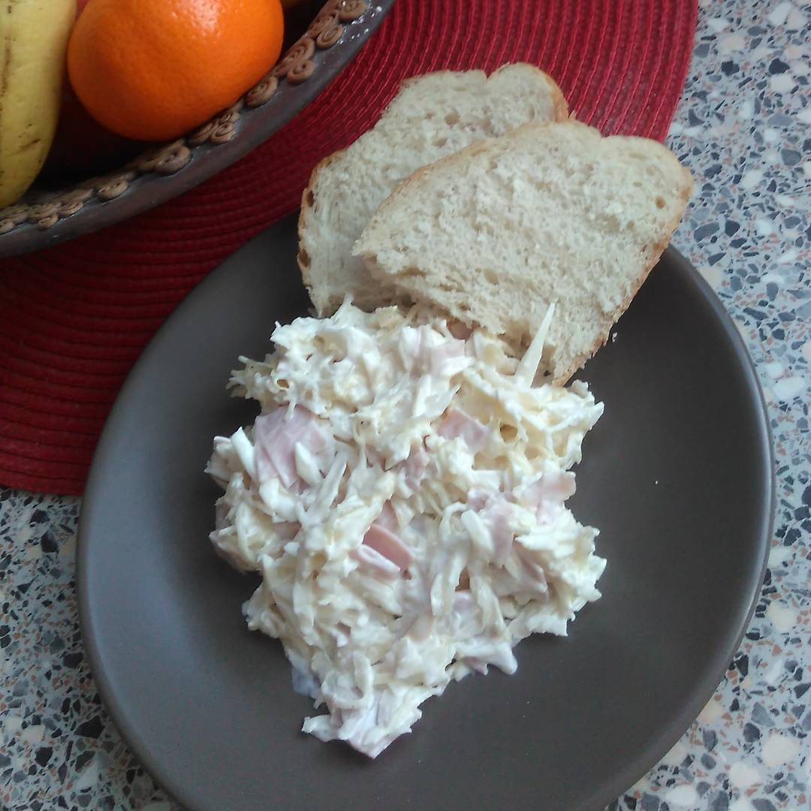

Šalát z kyslej kapusty podľa @zsmieskova — Normy Jedál
#dnesjem #foodpics #foodart #nofilters #foodporn #greatfood #easy #tastyfood #homechef #homefood #traditionalfood #slovakfood #autumnfood #winterfood #sauerkraut #sauerkrautsalad #salatzkyslejkapusty #kyslakapusta